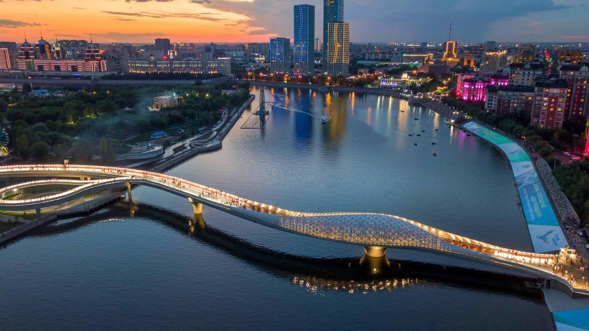
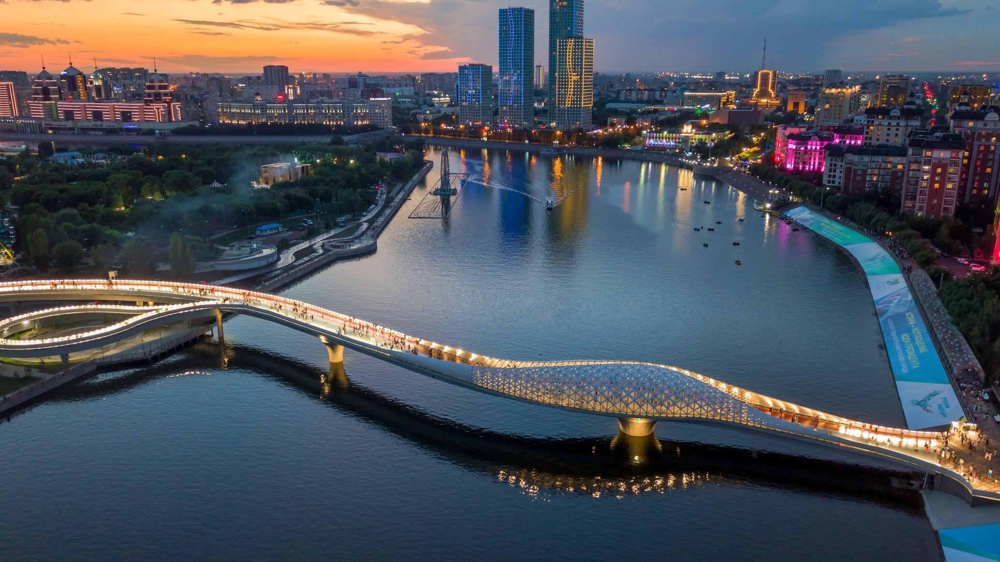

Modern Kazakhstan is becoming increasingly attractive not only for tourists but also for expats, students, and digital nomads. Simplified visa regimes, growing infrastructure, rich cultural heritage, and the hospitality of the locals make the country comfortable and accessible for visitors.
Easy entry is one of the key advantages
Citizens of CIS countries and several others can enter Kazakhstan without a visa for up to 30 or 90 days. The government actively develops tourism and international cooperation, reducing bureaucratic hurdles. Direct flights, improved border services, and a straightforward registration process make entry smooth even for newcomers.
Hospitality and openness
Kazakh people are known for their friendliness and willingness to help. In major cities like Almaty, Astana, and Shymkent, you’ll meet people of various nationalities and religions, creating an atmosphere of diversity and tolerance. Foreigners often say they feel at home in Kazakhstan despite linguistic and cultural differences.
Nature and culture — reasons to stay longer
From endless steppes to the majestic Tian Shan mountains, from salt lakes to stunning canyons — Kazakhstan’s nature is astonishing. You can enjoy winter resorts, summer hikes, eco-tourism, and gastronomic festivals. The country’s cultural heritage is a blend of nomadic history, Islamic traditions, and Soviet influence.
Opportunities for work and life
The IT, education, logistics, and energy sectors are growing rapidly. Many foreigners come to work in major companies or start their own businesses. Students can join international programs, and the quality of education in top universities improves each year. The cost of living is also lower than in most European countries, making it especially attractive for freelancers and startups.
Conclusion
Kazakhstan is a country easy to enter — and hard to leave. Comfort, safety, nature, growth opportunities, and unmatched hospitality make it an increasingly popular destination for living and travel. If you’re looking for new inspiration and want to experience the true spirit of Eurasia — Kazakhstan welcomes you with an open heart.
 


Comments (0)